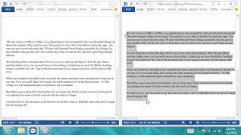
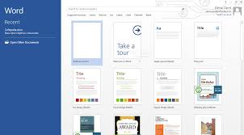
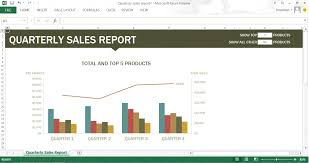
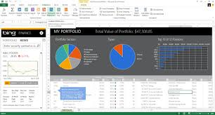
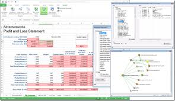
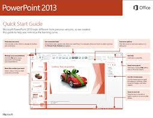

Manvi Garg-portfolio
My skills
Throughout my experience at high school I have learned and expanded my knowledge on many different subjects. This ranges anywhere from math and science,to English and history- but where I have learned the most is in computers and technology. I have broaden my horizons when it comes to learning about software programs and the millions of free useful resources you can find on the internet.
Working With Microsoft Word
 Microsoft Word is a document processing program that offers many useful tools when creating things like reports, school projects, or blogs.
When working with MS Word I learned how to use these tools so that I can make my work look more professional. On one particular project
I used MS Word to create a report titled, Word Processing vs. Desktop Publishing. In this report I formatted it by setting margins,
altering the spacing between lines, adding a footnote, adding a table, and offering a work cited page at the end.
All of these things make the report eye capturing and easy to read.
Microsoft Word is a document processing program that offers many useful tools when creating things like reports, school projects, or blogs.
When working with MS Word I learned how to use these tools so that I can make my work look more professional. On one particular project
I used MS Word to create a report titled, Word Processing vs. Desktop Publishing. In this report I formatted it by setting margins,
altering the spacing between lines, adding a footnote, adding a table, and offering a work cited page at the end.
All of these things make the report eye capturing and easy to read.
|  |  |
Working With Microsoft Excel
 Microsoft Excel is a program that helps you create spreadsheets that you've always dreamed about...
not like anyone really does dream about spreadsheets though. This program is so advanced that you can even analyze and share information
so that you know you are always making the best decisions. Microsoft Excel is perfect in the office place and especially when you are dealing with sales.
One assignment that really caught my interest and ability was one where I had to make a sales analysis for Madonna's Virtual Sojourn.
In this spreadsheet I totalled the costs of the mail, campuses, telephones, and the web in the areas of Aruba, Bahamas, Daytona, and Key West.
To format the spreadsheet I changed the column and row widths/heights, modified the text colors, and last but not least added a chart to compare the
totals. Listed below, I have a few other projects I worked on as well as Madonna's.
Microsoft Excel is a program that helps you create spreadsheets that you've always dreamed about...
not like anyone really does dream about spreadsheets though. This program is so advanced that you can even analyze and share information
so that you know you are always making the best decisions. Microsoft Excel is perfect in the office place and especially when you are dealing with sales.
One assignment that really caught my interest and ability was one where I had to make a sales analysis for Madonna's Virtual Sojourn.
In this spreadsheet I totalled the costs of the mail, campuses, telephones, and the web in the areas of Aruba, Bahamas, Daytona, and Key West.
To format the spreadsheet I changed the column and row widths/heights, modified the text colors, and last but not least added a chart to compare the
totals. Listed below, I have a few other projects I worked on as well as Madonna's.
|  |  |  |
Working With Presentation Software
Microsoft PowerPointMicrosoft PowerPoint allows users to easily create high-quality, high-impact presentations. While doing this, you can also share very useful information. The only downfall of Microsoft PowerPoint is the cost. But, you definitely get what you pay for with this program. Microsoft PowerPoint offers many different tools for easy access and use. |
Google Presentations
Google Presentations is just like Microsoft PowerPoint in the same ways that it offers you a program where you can put lots of very important information into a presentation that draws people in. One downfall about Google Presentations is that it doesn't offer as many design options such as a variation of background designs and fonts. The very big and major upside to Google Presentations though is that it is completely free of charge. All you need to access Google Presentations is a Google Account which is very easy to create. |